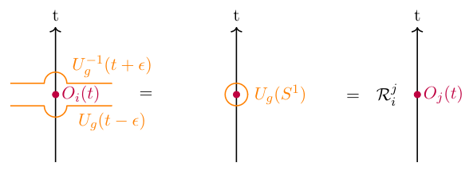

Higher-form symmetries in the language of differential
geometry
Ben McDonough
7-23-26
Introduction
In recent years, the concept of symmetry in quantum field theory has been significantly generalized. Ordinary (0-form) symmetries act on pointlike operators and are associated with codimension-1 topological operators. Higher-form symmetries extend this paradigm by acting on extended objects, such as line or surface defects, and are characterized by higher-codimension topological operators. In these notes, we will explain the basics of higher-form symmetries and the differential geometry concepts needed to pursue further reading. The main sources for these notes are [1], [2]. The paper that introduced and consolidated many of these ideas is [3], and it is also quite readable. Lastly, we will explore the application of generalized symmetries to E&M.
Noether’s theorem
Consider a QFT with action \(S\). An ordinary (0-form) symmetry of this QFT is a transformation \[\begin{aligned} y^\mu &= x^{\mu} + \varepsilon^\alpha \frac{\partial x^\mu}{\partial \varepsilon^\alpha} & \phi' = \mathcal F(\phi) &\approx \phi + \varepsilon^\alpha\frac{\partial \mathcal F}{\partial \varepsilon^\alpha} \end{aligned}\] under which the action is invariant. To compute the variation of the action explicitly, we first find the Jacobian of the transformation in the limit of small \(\varepsilon\): \[\begin{aligned} \det\left(\left[\frac{\partial y^\nu}{\partial x^\mu}\right]_{\mu \nu}\right) \approx \det\left(\mathrm{e}^{\left[\frac{\partial}{\partial x^\nu}\left(\varepsilon^\alpha\frac{\partial x^\mu}{\partial \varepsilon^\alpha}\right)\right]_{\mu \nu}}\right) = \mathrm{e}^{\Tr\left[\frac{\partial}{\partial x^\nu}\left(\varepsilon^\alpha\frac{\partial x^\mu}{\partial \varepsilon^\alpha}\right)\right]_{\mu \nu}} \approx 1+\frac{\partial}{\partial x^\mu}\left[\varepsilon^\alpha\frac{\partial x^\mu}{\partial \varepsilon^\alpha}\right] . \end{aligned}\] This gives the determinant to \(\mathrm O(\varepsilon)\). Next, the partial derivatives transform as \[\begin{aligned} \frac{\partial y^\nu}{\partial x^\mu} = \delta_{\mu\nu} + \frac{\partial}{\partial x^\mu}\left[\varepsilon^\alpha \frac{\partial x^\nu}{\partial \varepsilon^\alpha}\right] , \end{aligned}\] so to first order in \(\varepsilon\), \[\begin{aligned} \frac{\partial}{\partial y^\nu} = \frac{\partial x^\mu}{\partial y^\nu}\frac{\partial}{\partial x^\mu} = \frac{\partial}{\partial x^\nu} - \frac{\partial}{\partial x^\nu}\left[\varepsilon^\alpha \frac{\partial x^\mu}{\partial \varepsilon^\alpha}\right]\frac{\partial}{\partial x^\mu} . \end{aligned}\] Plugging these into the action, we find \[\begin{aligned} \delta S & = \int \mathrm{d}^{d+1} y \mathcal L\left(\phi', \frac{\partial \phi'}{\partial y^\mu}\right) - \int \mathrm{d}^{d+1} x \mathcal L\left(\phi, \frac{\partial \phi}{\partial x^\mu}\right) \notag\\ &= \int \mathrm{d}^{d+1}x \left(1 + \partial_\mu \varepsilon^\alpha \frac{\partial x^\mu}{\partial \varepsilon^\alpha}\right)\mathcal L\left(\phi + \varepsilon^\alpha\frac{\partial \mathcal F}{\partial \varepsilon^\alpha}, (\delta_{\mu \nu} - \partial_\mu \varepsilon^\alpha\frac{\partial x^\nu}{\partial \varepsilon^\alpha})\partial_\mu \left[\phi + \varepsilon^\alpha\frac{\partial \mathcal F}{\partial \varepsilon^\alpha}\right]\right) - \mathcal L(\phi,\partial_\mu \phi) . \end{aligned}\] Since we can take \(\partial_\mu \varepsilon^\alpha = 0\) and then bring \(\varepsilon^\alpha\) outside of the integral, this means that the terms not containing derivatives of \(\varepsilon^\alpha\) must cancel. We can just keep the terms with \(\partial_\mu \varepsilon^\alpha\) in the expansion, and we find \[\begin{aligned} \delta S &= \int \mathrm{d}^{d+1} x \left[ \frac{\partial \mathcal L}{\partial (\partial_\nu\phi)}\frac{\partial \mathcal F}{\partial \varepsilon^\alpha}\partial_\nu\varepsilon^\alpha - \frac{\partial \mathcal L}{\partial (\partial_\nu\phi)}\partial_\mu \varepsilon^\alpha \frac{\partial x^\nu}{\partial \varepsilon^\alpha}\partial_\mu \phi + \partial_\mu \varepsilon^\alpha\frac{\partial x^\mu}{\partial \varepsilon^\alpha} \mathcal L \right] \\ &= \int \mathrm{d}^{d+1} x j_\alpha^\nu \partial_\nu \varepsilon^\alpha = 0, \end{aligned}\] where we introduced the current \[\begin{aligned} j_\alpha^\nu &= \frac{\partial \mathcal L}{\partial (\partial_\nu \phi)}\frac{\partial \mathcal F}{\partial \varepsilon^\alpha} + \frac{\partial x^\mu}{\partial \varepsilon^\alpha}\underbrace{\left[\mathcal L\delta_{\mu \nu} - \frac{\partial \mathcal L}{\partial (\partial_\nu \phi)}\partial_\mu \phi\right]}_{T_{\mu \nu}} \end{aligned}\] and also identified the stress tensor \(T_{\mu \nu}\). Using integration by parts, we find \[\begin{aligned} \int j_\alpha^\nu \partial_\nu \varepsilon^\alpha &= - \int \partial_\nu j_\alpha^\nu \varepsilon^\alpha = 0. \end{aligned}\] Then since \(\varepsilon^\alpha\) is arbitrary, we must have the continuity equation \[\begin{aligned} \partial_\mu j_\alpha^\nu &= 0. \end{aligned}\] This conserved current leads to a conserved charge \[\begin{aligned} Q(t) = \int_M \mathrm{d}^dx j_\alpha^0, \end{aligned}\] where \(M\) is a spatial slice of spacetime at time \(t\). This charge is conserved because \[\begin{aligned} \dot Q = \int_{M} \mathrm{d}^d x \partial_0j_\alpha^0 &= -\int_M \mathrm{d}^d x \partial_i j_\alpha^i = \int_{\partial M} \mathrm{d}^{d-1}x j_\alpha^i \cdot \hat n = 0, \end{aligned}\] where \(i\) refers to Euclidean indices and we assume that \(j_\alpha = 0\) on \(\partial M\).
Higher-form symmetry
First, we notice that a fixed time \(t\) is the same as a 3D slice of 4D spacetime, which we call \(\Sigma_3\). In this language the conserved charge is defined by \[\begin{aligned} \label{eq:ordinary_charge} Q_\alpha(\Sigma_3) = \int_{\Sigma_3} j_\alpha^\mu \hat n^\mu \end{aligned}\] where \(\hat n\) is the normal vector to \(\Sigma_3\). If \(\Sigma_3\) is a slice of spacetime at a fixed time, then \(\hat n = (1,0,0,0)\) and this reduces to the ordinary definition of \(Q(t)\). However, we notice that \(\Sigma_3\) can just as well be an arbitrary 3-submanifold of spacetime. What is the analogous conservation law? Suppose that \(M\) is a 4-submanifold with boundary, and \(\partial M = \Sigma_3 \sqcup \Sigma_3'\) with opposite orientations. Then \[\begin{aligned} Q_\alpha(\Sigma_3) - Q_\alpha(\Sigma_3') = \int_{\Sigma_3}j_\alpha^\mu n^\mu - \int_{\Sigma_3'}j_\alpha^\mu n^\mu = \int_{\partial M}j_\alpha^\mu n^\mu = \int_{M}\partial_\mu j_\alpha^\mu = 0 \end{aligned}\] This implies that \(Q_{\alpha}\) is a topological invariant in that it only depends on the homology class of \(\Sigma_3\).
In this language, we would call the global symmetry an ordinary or 0-form symmetry, and say that it acts on a codimension-1 submanifold (in spacetime). Viewing charges as topological invariants rather than conserved quantities will allow us to generalize to \(p > 0\).
Riemannian geometry and the Hodge star
To generalize this idea, we introduce the Hodge star. First we need to talk about Riemannian structures. In the following, let \(M\) denote spacetime. A Riemannian structure is a 2-covector field \(g \in \Omega^2(M)\) which restricts on each tangent space \(T_pM\) to an inner product. A Riemannian structure allows us to canonically relate vector fields and covector fields:
Def 1 (Musical isomorphisms). Let \(\{E_i\}\) be an orthonormal frame for \(T_pM\) for \(p \in U\). Then if \(j = j^i E_i\) is a vector field, we define the dual covector field to be \[\begin{aligned} j &= j^i E_i \Rightarrow j^\flat = j_i \varepsilon^i \\ J &= J_i \varepsilon^i \Rightarrow J^\sharp = J^iE_i \end{aligned}\] where \(\varepsilon^i = \langle E_i, \cdot \rangle_g\) is a covector. The raised/lowered index on \(j\) is irrelevant because we are working in a basis where \(g\) is diagonal. The musical isomorphisms correspond to raising and lowering the indices, hence the sharp and flat. It is clear that this definition is invariant under isometry, corresponding to a different choice of orthonormal frame.
Def 2. Given \(\omega \in \Omega^k(M)\), the Hodge star is a map \(*:\Omega^k(M) \to \Omega^{d+1-k}(M)\), where \(*\omega\) is the unique form such that \[\begin{aligned} \omega \wedge *\eta \equiv \langle \omega, \eta \rangle_g \mathrm{d} V_g \end{aligned}\] where \(\mathrm{d} V_g\) is the Riemannian volume form.
The Hodge star generalizes divergence in the following way:
Prop 1. Given a vector field \(j\), the divergence at \(p\) is \((\div j)_p = \partial_ij^i\) where \(\{x^i_p\}\) are a set of orthonormal coordinates at \(p\). By orthonormal coordinates, we mean that \(\left\{\frac{\partial}{\partial x^i_p}\right\}_i\) form an orthonormal basis for \(T_pM\). In terms of the Hodge star, we have \[\begin{aligned} \div j = *\mathrm{d}*j^\flat . \end{aligned}\] This can be used to define the analogous divergence of a \(p\)-form.
Proof. We have \[\begin{aligned} * j^\flat = j^i\varepsilon_{i, i_1, \ldots, i_{d+1}} \mathrm{d} x^{i_1} \wedge \ldots \wedge \mathrm{d} x^{i_{d+1}} \end{aligned}\] Taking the exterior derivative, \[\begin{aligned} \mathrm{d} * j^\flat &= \frac{\partial j^i}{\partial x^j} \varepsilon_{i, i_1, \ldots, i_{d+1}} \mathrm{d} x^j \wedge \mathrm{d} x^{i_1} \wedge \ldots \wedge \mathrm{d} x^{i_{d+1}} = \frac{\partial j^i}{\partial x^i}\mathrm{d} V_g \end{aligned}\] Then the result follows from \(* \mathrm{d} V_g = 1\). ◻
Prop 2 (Stokes’ theorem for divergence). \[\begin{aligned} \int_M (\div X)\mathrm{d} V_g = \int_{\partial M}\langle N, X \rangle_g \end{aligned}\] where \(N\) is the unit normal vector field to \(\partial M\).
The notion of a unit normal vector field just generalizes the normal vector \(\hat n\). The Riemannian structure affords a decomposition of each tangent space of \(M\) for \(p \in \partial M\) as \[\begin{aligned} T_p M = T_p \partial M \oplus (T_p \partial M)^\perp \end{aligned}\] and then we can choose a unique normalized vector in \((T_p M)^\perp\) to call \(N_p\). Since \(g\) is smooth and \(\partial M\) is a smooth submanifold, the resulting vector field \(N\) is smooth.
Prop 3. Let \(\Sigma\) be a codimension-1 submanifold with a unit normal vector field \(N\). Then \[\begin{aligned} * X^\flat = \langle N, X \rangle \mathrm{d} V_{\tilde g} \end{aligned}\] where \(\mathrm{d} V_{\tilde g} = i_N \mathrm{d} V_{g}\) is the volume form induced on \(\Sigma\).
Proof. We choose the oriented orthonormal basis \(\varepsilon^0 = N^\flat, \varepsilon^1, \ldots, \varepsilon^{d-1}\). Then \[\begin{aligned} *X^\flat|_{\Sigma} = X^i \varepsilon_{i, i_1, \ldots, i_{d-1}}\varepsilon^{i_1} \wedge \ldots \wedge \varepsilon^{i_{d-1}}|_{\Sigma} = X^0 \varepsilon^{1} \wedge \ldots \wedge \varepsilon^{d-1} \end{aligned}\] where the volume form induced on \(\Sigma\) is exactly \(\varepsilon^1 \wedge \ldots \wedge \varepsilon^{d-1} = i_N(\mathrm{d} V_g)\) and \(X^i = \varepsilon^i(X) = \langle (\varepsilon^i)^\sharp, X\rangle\). ◻
From this, the divergence theorem follows as a consequence of Stokes’ theorem \[\begin{aligned} \int_M \div X \mathrm{d} V_g = \int_M \mathrm{d} * X^\flat = \int_{\partial M} * X^\flat = \int_{\partial M}\langle X, N \rangle_g \mathrm{d} V_{\tilde g} \end{aligned}\]
\(p\)-form currents
Def 3. We will define the generalized continuity equation for a \(p+1\)-form current \(j\): \[\begin{aligned} \mathrm{d} * j = 0 \end{aligned}\] and we will call such a current co-closed.
Remark 1. The reason for calling this condition co-closure is that \(*\mathrm{d}* = \pm \mathrm{d}^\dagger\) with respect to the \(L^2\) inner product on forms (for a closed, compact manifold \(M\)): \[\begin{aligned} \langle \omega, \mathrm{d}\eta \rangle &= \int_M \langle \omega, \mathrm{d} \eta\rangle_g \mathrm{d} V_g = \pm \int_M \mathrm{d} \eta \wedge * \omega = \pm\int_M\eta \wedge \mathrm{d} * \omega\notag\\ & = \pm \int_M \eta \wedge ** \mathrm{d} * \omega = \pm \int_M \langle \eta, * \mathrm{d} * \omega \rangle_g \mathrm{d} V_g = \pm \langle * \mathrm{d} * \omega, \eta \rangle \end{aligned}\] where we used \(** = \pm 1\) depending on the degree of the forms.
Then we can define the generalized conserved charge
Def 4. Given a codimension-\(p+1\) manifold \(\Sigma\) and a \(p+1\)-form current \(j\), define \[\begin{aligned} Q(\Sigma) &= \int_{\Sigma} *j \end{aligned}\]
To see how this definition reduces to the previous one when \(j\) is a vector field (i.e. \(p = 0\)), we apply Prop. 3 to find \[\begin{aligned} Q(\Sigma_3) = \int_{\Sigma_3}*j^\flat = \int_{\Sigma_3}\langle N, j\rangle_{g}\mathrm{d} V_{\tilde g}, \end{aligned}\] which is identical to Eq. [eq:ordinary_charge]. We can see that this generalizes to \(p\)-forms by computing the magnitude of the projection of \(j^\sharp\) onto directions orthogonal to the immersed submanifold \(\Sigma\), just like the notion of flux through a surface.
Importantly, generalized symmetries give rise to topological invariants. Suppose that \(\Sigma, \Sigma'\) bound a codimension-\(p\) manifold \(M\), i.e. \(\partial M = \Sigma \sqcup \Sigma'\). Then \[\begin{aligned} Q(\Sigma) - Q(\Sigma') = \int_{\partial M}* j = \int_{M}\mathrm{d} * j = 0 \ . \end{aligned}\] Therefore \(Q(\Sigma) = Q([\Sigma])\), where \([\Sigma]\) is the homotopy class of \(\Sigma\). Furthermore, if \(\beta\) is a codimension-\(p+2\) form and \(*j' = *j + \mathrm{d} \beta\), then \[\begin{aligned} Q'(\Sigma) - Q(\Sigma) = \int_{\Sigma}\mathrm{d} \beta = \int_{\partial \Sigma}\beta = 0 \end{aligned}\] since we assumed that \(\Sigma\) was a manifold without boundary. Thus, the generalized charge is actually just the duality pairing between homology and cohomology, i.e. \(Q(\Sigma) \equiv [*j]([\Sigma])\), where \([*j]\) is the cohomology class of \(*j\).
Observables in QFT
The discussion so far has been purely classical, and when translating from currents to charged observables and unitary operators, the reframing of symmetries as topological invariants becomes very helpful.
First, a brief reminder about observables in QFT. Given a Hamiltonian \(H\), the path integral is derived through Trotterization: \[\begin{aligned} \bra{\phi_i}\mathrm{e}^{\mathrm{i}H(t+ \mathrm{i}\varepsilon)}\ket{\phi_f} &= \int_{\phi_i(0)}^{\phi_f(t)}\mathcal D[\phi]\mathrm{e}^{\mathrm{i}S_\varepsilon} \end{aligned}\] where \(S_\varepsilon\) is the appropriately regularized action. Using this prescription, we can compute a time-ordered correlation function: \[\begin{aligned} &\bra{0}\hat\phi_1(x_1, t_1) \ldots \hat \phi_n(x_n, t_n) \ket{0} \notag \\ &= \lim_{\varepsilon\to 0}\lim_{\substack{T_i \to -\infty\\ T_f \to \infty}}\frac{\bra{\phi_i}\mathrm{e}^{\mathrm{i}H (T_i - t_1)(1- \mathrm{i}\varepsilon)}\hat \phi(x_1) \mathrm{e}^{\mathrm{i}H(t_1 - t_2)(1 - \mathrm{i}\varepsilon)} \hat \phi(x_2) \ldots \hat \phi(x_n) \mathrm{e}^{-\mathrm{i}HT_f(1+\mathrm{i}\varepsilon)}\ket{\phi_f}}{\bra{\phi_i}\mathrm{e}^{\mathrm{i}H(T_i - T_f)(1+ \mathrm{i}\varepsilon)}\ket{\phi_f}} \\ &= \lim_{\varepsilon\to 0}\frac{\int_{\phi_i}^{\phi_f}\mathcal D[\phi]\phi(t_1, x_1)\phi(t_2, x_2)\ldots \phi(t_n, x_n)\mathcal D[\phi]\mathrm{e}^{\mathrm{i}S_\varepsilon}}{\int_{\phi_i}^{\phi_f}\mathcal D[\phi]\mathrm{e}^{\mathrm{i}S_\varepsilon}}, \end{aligned}\] for any \(\phi_i, \phi_f\), so we usually integrate them out. We also assumed the system is gapped, so \[\begin{aligned} \lim_{t \to \infty}\mathrm{e}^{-\mathrm{i}H (t-\mathrm{i}\varepsilon)}\ket{\phi} &= \lim_{t \to \infty}\sum_{n} \ket{n} \mathrm{e}^{-\mathrm{i}E_n (t - \mathrm{i}\varepsilon)}\braket{n}{\phi} \notag\\ &= \braket{0}{\phi} \end{aligned}\] We see that the path integral naturally forces time-ordering under the expectation value.
Symmetry defects
We will call a family \(\{O_i\}_i\) of observables charged under a symmetry group \(G\), acting by a representation \(U_g\), if \[\begin{aligned} U_g^\dagger O_i U_{g} = R_{i}^j(g)O_j \label{eq:charged} \end{aligned}\] for some representation \(R\) of \(G\). From above, since \(U_g\) commutes with \(H\), we have \[\begin{aligned} \langle U_g^\dagger(t_1)O_i(t)U_g(t_2) \rangle = \langle U_g^\dagger(t_1')O_i(t)U_g(t_2') \rangle \end{aligned}\] for any \(t_1 < t < t_2\) and \(t'_1 < t < t_2'\). However, by [eq:charged], this is not true for \(t_1 < t\) and \(t'_1 > t\). If we imagine each time \(t\) as specifying a 3d slice \(\Sigma_3\) of spacetime, then this means we can topologically deform \(\Sigma_3\), but \(O_i\) acts like a puncture in spacetime, through which \(\Sigma_3\) cannot be smoothly deformed. Taking advantage of the ability to deform \(\Sigma_3\) in the time direction as well, we can deform \(\Sigma_3\) and \(\Sigma_3'\) (corresponding to \(t_2\)) until \(\Sigma_3 \cup \Sigma_3'\) form the boundary of an arbitrarily small manifold \(M\) containing the point at which \(O_i\) acts, as shown in Fig. 1.

This is our first example of linking:
Prop 4. Given a \(p\)-dimensional submanifold \(M\) and a codimension \(p+1\) submanifold \(N\), we define a linking number as follows: choose a submanifold \(M'\) (resp. \(N'\)) such that \(M = \partial M'\) (resp. \(N = \partial N'\)), and define \[\begin{aligned} \langle M, N \rangle \equiv \mathrm{Int}(M, N') = \mathrm{Int}(M', N) \end{aligned}\] where \(\mathrm{Int}\) counts the number of oriented intersections between the two submanifolds. It is a theorem that this number is a homotopy invariant of \(M\) and \(N\).
In the case of an ordinary symmetry, \(p = 0\) and \(O_i\) which is point-like links with the codimension-1 manifold \(\Sigma_3\) if \(\Sigma_3\) bounds a manifold containing the support of \(O_i\).
To generalize this, given a \(p+1\)-form current \(j\), a codimension-\(p+1\) submanifold \(\Sigma\), and a Lie algebra element \(\mathfrak g\), we define the symmetry defect operator to be \[\begin{aligned} U_g(\Sigma) \equiv \mathrm{e}^{\mathfrak g Q(\Sigma)} = \mathrm{e}^{\mathfrak g \int_{\Sigma}*j}. \end{aligned}\] Then we will use the linking from before to define a general charged operator:
Def 5. Let \(\Sigma\) be any codimension \(p+1\) submanifold. We call \(\{O_i(M)\}\) charged if for \(p\)-submanifold \(M\) which links once with \(\Sigma\), we have \[\begin{aligned} \langle \mathcal T\{U_g(\Sigma)O_i(M)\}\rangle = R_i^j(g)\langle \mathcal T\{O_j(M)\}\rangle \end{aligned}\] where \(O_i(M)\) is supported on \(M\), and we used \(\mathcal T\) to emphasize the time-ordering under the expectation value.
Notice that the time-order captures the conjugation of \(O_i\) by \(U_g\) that we saw in the zero-form case when \(M\) is point-like and \(\Sigma\) is a submanifold containing \(\Sigma\)! This is also why we call the symmetry \(p-\)form; because the operators which are charged under the symmetry are \(p\)-dimensional.
Application: E&M
We will illustrate these concepts in matter-free electromagnetism. First, we have seen how to write the Maxwell action as \[\begin{aligned} S = -\frac{1}{4e^2}\int \mathrm{d}^4 x F^{\mu\nu}F_{\mu \nu} = -\frac{1}{2e^2}\int \langle F, F \rangle_{g} = -\frac{1}{2e^2}\int F \wedge *F . \end{aligned}\] We recognized the presence of the Riemannian inner product in the action \(S\) and re-wrote it in terms of the Hodge-star! The field strength tensor \(F\) is defined as \(F_{\mu \nu} = \partial_\mu A_\nu - \partial_\nu A_\mu\), which can be written as a 2-form in coordinate-free notation as \[\begin{aligned} F = \mathrm{d} A \end{aligned}\] where \(\mathrm{d}\) is the exterior derivative. To find the classical equations of motion, we vary the action with respect to \(A\): \[\begin{aligned} \delta S &= -\frac{1}{2e^2}\int \mathrm{d} \delta A \wedge *F + F \wedge * \mathrm{d} \delta A \notag\\ &= -\frac{1}{e^2}\int \mathrm{d} \delta A \wedge *F \notag\\ &= -\frac{1}{e^2}\int \left[ \mathrm{d} (\delta A \wedge *F) + \delta A \wedge \mathrm{d} *F \right] \notag\\ &= -\frac{1}{e^2} \int \delta A \wedge \mathrm{d} *F \end{aligned}\] where we used integration by parts and the symmetry of the \(\cdot \wedge * \cdot= \langle \cdot, \cdot \rangle_g\) operator. This shows that \[\begin{aligned} \frac{\delta S}{\delta A} = -\frac{1}{e^2} \mathrm{d} *F = 0 \end{aligned}\] so \(j = F\) is the co-closed 2-form current! What is the corresponding symmetry operator? We have \[\begin{aligned} Q(\Sigma_2) = \int_{\Sigma_2} *F \end{aligned}\] The operator which is charged under this symmetry is the Wilson line operator. Given a closed 1-submanfold (a line) \(\gamma\), this is defined as \[\begin{aligned} W_q(\gamma) = \exp\left(\mathrm{i}q\int_\gamma A\right) \end{aligned}\] We remember from undergrad E&M that the term added to the action to couple to a charge \(q\) is simply \[\begin{aligned} - q\int \mathrm{d} t A \cdot \dot x = -q\int_\gamma A \end{aligned}\] so the Wilson loop corresponds to inserting the worldline \(\gamma\) of a charge \(q\). It turns out that \(Q\) is just Gauss’s law. To see how these operators link, consider the action in the presence of charge: \[\begin{aligned} S' = -\frac{1}{2e^2}\int F \wedge *F + 2e^2 q A \wedge \delta_\gamma \end{aligned}\] where \(\delta_\gamma\) is a 3-form \(\delta\)-function on the loop \(\gamma\). Carrying out the variation again, we now find that \[\begin{aligned} \delta S' = \int \delta A \wedge \left(-\frac{1}{e^2}\mathrm{d} *F + q\delta_\gamma\right) = 0 \implies \mathrm{d} * F = qe^2\delta_\gamma \end{aligned}\] Therefore the value of the charge is \[\begin{aligned} Q(\Sigma_2) = \int_{\Sigma_2} *F = \int_{\Sigma_3} \mathrm{d} *F = qe^2\int_{\Sigma_3}\delta_\gamma = qe^2 \langle \Sigma_2 , \gamma\rangle \end{aligned}\] where we chose \(\partial \Sigma_3 = \Sigma_2\) and applied Stokes’ theorem. We can see that this is just the linking number, confirming that \(W_q(\gamma)\) is charged under the symmetry! Furthermore, since \(Q(\Sigma_2)\) measures the amount of charge within \(\Sigma_2\), we can identify this charge with Gauss’s law, and the corresponding symmetry as conservation of field lines.
Lastly, we remark on EM duality. Using \(\mathrm{d}^2 = 0\), we see that \(\mathrm{d} F = \mathrm{d}^2A = 0\), also known as the Bianchi identity. Since \(** = \pm 1\), this gives another conserved 2-form current \(*F\) corresponding to conservation of magnetic field lines. The corresponding dual symmetry operators are known as t’Hooft loops.
Coupling to gauge fields
The principal way to study an ordinary symmetry is to couple it to a 1-form gauge field. Intuitively, domains in the gauge field become domains of the symmetry. To generalize this, we can see that a \(p+1\)-form current naturally couples to a \(p+1\)-form gauge field: \[\begin{aligned} S_{\mathrm{int}} = \int A \wedge * j \end{aligned}\] What we need to verify is that the action is invariant under a gauge transformation \(A \mapsto A + \mathrm{d} \lambda\), where \(\lambda\) is a \(p\)-form. We see that \[\begin{aligned} \delta S_{\mathrm{int}} = \int \mathrm{d} \lambda \wedge * j = (-1)^{p+1}\int \lambda \wedge \mathrm{d} * j = 0, \end{aligned}\] so the invariance of this “minimal coupling” under gauge transformations is implied by the co-closure condition.